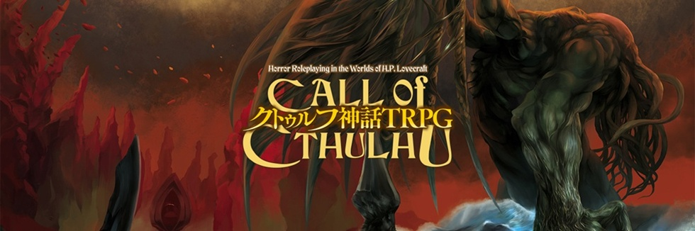
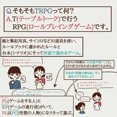
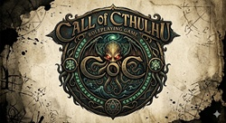

まず最初にTRPGってそもそも何？という方や、聞いたことはあるけどどんなものかは詳しく知らないという方も多いと思います。TRPGとはTable talk role-playing game(テーブルトークロールプレイングゲーム) という物の略でゲーム機などを使わず紙・ペン・ダイスを用いて会話とルールブックだけで遊ぶごっこ遊びのようなもので、 GMが一人とシナリオに決められた人数のplが集まってそのシナリオを自分たちの行動によって数々の分岐がある中で最後どのようなエンドを 迎えるのかを楽しむ遊びです

CoCって言葉をそもそも知らない方が大多数だと思いますCOCというのはCall of Cthulhu(コールオブクトゥルフ)の略で、 様々な種類のTRPGがあるなかでクトゥルフ神話という物を舞台としたものの総称のことです。一般的には第6版というルールと、 第7版というルールがあり6版はわかりやすくとっつきやすい7版は複雑な分自由度が高くなっています。